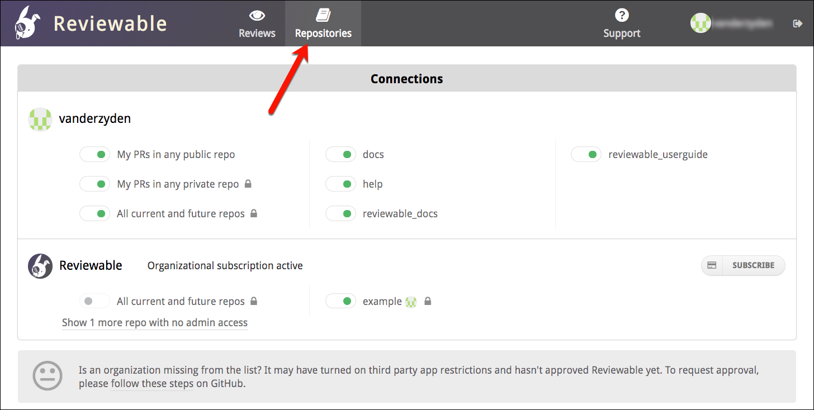
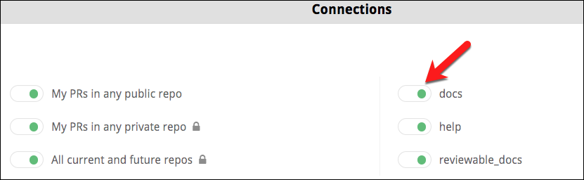
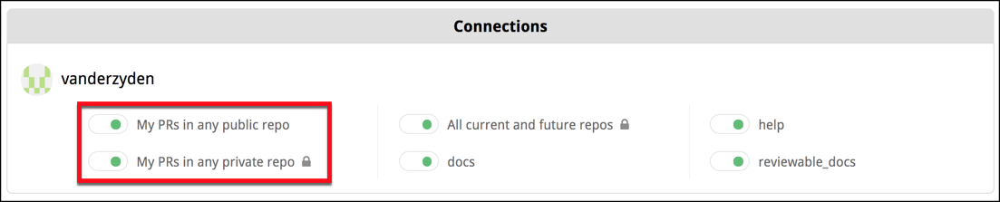
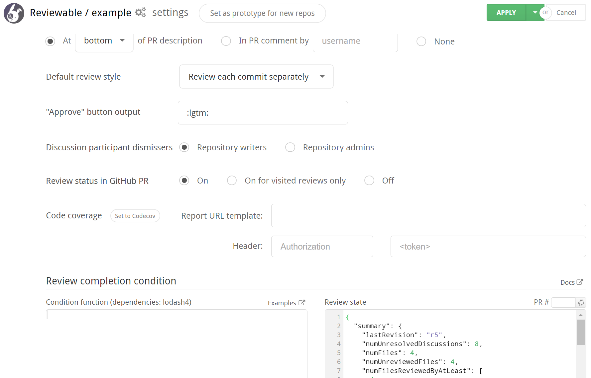
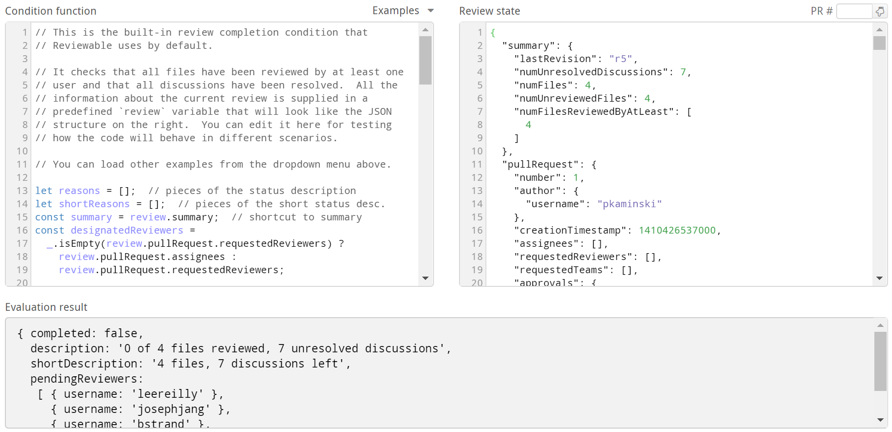

Repositories
The Repositories page lists all of your repos. From this page, you can connect Reviewable to Github repositories, adjust the connections' settings, and manage your Reviewable subscriptions (for which, please see the next chapter).

The repositories are grouped by owner and listed alphabetically. If you don't see an organization of which you're a member, ensure that you click Show all organizations if it's there. If the organization is still missing, check whether you need to request approval for Reviewable from your organization owners.
Security concerns
First off, Reviewable will never store your source code on its servers. Each session will fetch the code directly from GitHub into the browser over a secure HTTPS connection. For transparency, here’s a non-exhaustive list of the kinds of data stored on Reviewable's servers:
- Comments, including drafts.
- Pull request metadata, such as filenames, and commit and file SHAs.
- Basic account data, such as ID, username, and email address.
- The OAuth access token that you authorized (encrypted for extra security).
- Repo permissions and organization memberships.
- Settings for all levels: organization, repository, user, and review.
- Subscription data, but only the last 4 of the credit card and expiration date are kept.
- Issue titles, commit messages, and GitHub branch protection settings are cached and flushed regularly.
Access is controlled by a set of standalone security rules that are enforced directly by the database. Access permissions are inherited from GitHub and rechecked every half hour. All data is always transmitted across secure connections.
The access token remains encrypted at rest with a key known only to Reviewable servers, and used only to access GitHub on your behalf. Unless you grant explicit written authorization, Reviewable staff will never use the token to access your repository contents or mutate data. (We may use it to test innocuous read-only metadata API calls when debugging an issue specific to your account.)
Reviewable does need write permissions for your repos. See the GitHub authorizations section for a full explanation.
And of course under no circumstances will we disclose any of your private information to other parties beyond what's needed to provide our service — please see our terms of service and privacy policy for the legal details.
If you need more details about our security architecture or have any other concerns we can address, please contact us at support@reviewable.io.
Connecting repositories
The indicator next to each repository name shows the connection state for this repo. While a repo is connected, Reviewable automatically creates a review for any open PR and inserts a link into all open PRs in the repo.

The toggle's color reflects the state of the connection:
- Black — The repo is disconnected. Reviewable will not automatically create reviews for this repo, but it is possible to initiate a review from the Reviews dashboard.
- Green — The repo is connected and healthy. Reviewable will automatically create and update reviews for all open PRs and insert a link to the review into the description for each PR. (You can customize this latter behavior in the settings, but must do so before connecting the repo!)
- Red — The repo was connected, but the connection is now broken. Look for the error message on this page. Though some reviews may be created under this condition, it is necessary to fix the problem to ensure all reviews function properly.
You must have repo admin permissions to connect or disconnect a repo. Connecting to a private organizational repo may cause you to automatically begin the 30-day free trial.
It is entirely safe to connect or disconnect a repo at any time without risk of data loss. After a review is created, it will not be affected by this toggle.
If you previously connected repos, but later revoked the authorization for Reviewable, you will need to re-authorize access to maintain the connection. You will see messages at the top of the repo page that prompt you to take action.
If a user has connected a repo but later leaves an organization, it will be necessary for another admin to toggle the repo off and then on to assume control of the connection. (Reviewable will send a warning email to the original connector if it detects this situation.)
Each connected repository will have an "N open reviews" link under it that will take you to a repository-specific reviews dashboard.
Connect all current and future repos
There's also a special All current and future repos toggle. When turned on by an organization owner, Reviewable will connect all current and future repos in this organization and automatically create reviews for those repos. Reviewable will not connect any repos that were previously manually toggled off.
You may wish to confirm the settings of current repos and designate a prototype repo for future ones before you turn on this feature. By default, Reviewable will insert a link into all open PRs in all repos unless you've changed this setting beforehand.
Create reviews for your own PRs
You can also get Reviewable to create reviews for all PRs that you author, across all repos. If the My PRs in any public repo toggle is on, Reviewable will regularly scan your public PRs and create reviews for them (inserting a link into the PR), covering all of your open source contributions.

The same applies to private PRs for the My PRs in any private repo toggle, which gives you the flexibility to have only a subset of users in a private repo use Reviewable.
This last is a legacy feature that may get removed in the future, since it was mainly used to constrain the set of contributors to avoid going over quota, and this can now be specified directly in a subscription's configuration. It will only work if the relevant repo has an active subscription at the time the PR is created and won't backfill if a subscription is created later.
Reviews in connected vs unconnected repos
When you connect a repo, you get links to the reviews from all PRs in that repo and immediate updates whenever anything changes in GitHub.
By contrast, Reviewable doesn't get write access to the repo if you individually connect all your own PRs or create ad-hoc reviews via the dashboard. There are some disadvantages to this approach:
- New commits, GitHub comments, labels, and the PR assignee don't immediately sync with the review, but will only synchronize after somebody loads the review. The dashboard will display stale information for such reviews. Comments posted in Reviewable will propagate immediately.
- Assignee and label directives in GitHub and emailed comments won't apply until a user loads the review.
- Review status checks won't post to the PR, since Reviewable isn't subscribed to repo events and unable to make timely updates.
- Reviewable may not be able to reliably detect and apply your branch protection settings in its UI. (The branch protection settings will be enforced by GitHub no matter what, though, so this is safe but potentially confusing.)
- It may not be possible for Reviewable to pin revision commits, so if you use
git rebaseandgit push --force, some of them may get garbage collected and will no longer be accessible in the review. They'll usually get pinned when the reviewer (with push authority) accesses the review.
Though the differences above may be minor, it's much more convenient and reliable to connect a repo directly.
You may find it impractical to use Reviewable for all PRs, especially for small changes. While every pull request from a connected repo will automatically display a button that links it to a Reviewable review, you can simply ignore it and conduct the review in GitHub. Reviewable will close the review when you close the PR. However, if the PRs are in a private organizational repo, each review will count against your contributor maximum — whether you use it or not.
Repository settings
Click on a repository name to access the repo settings panel. This works whether the repo is connected or not.

If you make any changes to the settings, click the Apply button at the top of the page to commit your changes for the repo you originally chose. Click the adjacent dropdown button to view a panel for specifying additional repos to which these settings will be applied (all the settings, not just your current changes). Click Cancel to discard any change to the settings.
Prototype settings for new repos
If you are an organization owner, you can set a repo as the settings prototype for any repos not yet accessed or created. Simply click the Set as prototype for new repos button and new repos will get a copy of the prototype's settings the first time Reviewable accesses them.
This feature is particularly useful if you chose to connect all current and future repos.
Reviewable badge
Choose where the Reviewable badge is to be inserted on the GitHub website:
- Description — at the top or bottom of the description for the PR. This is convenient since the link will be in a consistent place. However, manual edits to the PR immediately after it's created will race, and might occasionally cause the edits to be lost.
- Comment — in a new PR comment. Optionally specify who should be the author of the comment (organization members with access to the repo only). Otherwise, this defaults to the repo connector or review visitor.
- None — no badges will be created (private repos only).
Changes here are retroactive (except that an existing description badge won’t be moved to a comment), but will be applied lazily as reviews are visited.
Default review style
Choose the default review style for all reviews in this repo. The choice here affects how commits are grouped into revisions, and the suggested sequence of diffs to review. Please follow a link for a full explanation of the two options.
This setting can be overridden on a particular review by any user with push permissions.
Approve button output
You can customize the function of the Approve button (aka LGTM button), which appears on the general discussion when the conditions are right. You can customize what will be inserted into the draft when you click it. By default it inserts :lgtm:, which renders a custom LGTM (Looks Good To Me) emoji. But, some teams customize it to insert a form, or a different approval message. The button also always sets the publication status to Approved.
Discussion participant dismissers
This setting controls what permissions a user needs to have to be able to dismiss participants from a discussion. By default, anybody with write permissions can do so but you can limit it to only repo admins if a stricter approach is desired.
Review status in GitHub PR
This setting determines whether or not to post the current completion status of the review as a status check on GitHub. Choose On for visited reviews to post only after a review has been visited at least once in Reviewable.
Code coverage
You can configure Reviewable to display code coverage information next to diffs by letting it know where to fetch code coverage reports from. You'll need to enter a URL template that Reviewable can instantiate to grab a report for all the files at a given commit. The template can make use of these variables:
{{owner}}: the repo owner (or organization) username.{{repo}}: the repo name.{{commitSha}}: the full SHA of the target commit.
If needed, you can also specify one additional header to send with the request. This will typically be an Authorization header that passes some kind of access token to enable access to private coverage reports.
The URL template will be available to all users with read permissions on this repo, so make sure to put any sensitive secrets in the headers instead.
If you added a header we will proxy the request through our server to keep the header's value a secret. However, we have a short list of domains that we're willing to proxy for. If your URL isn't on it you'll get an error and need to get in touch with us to get it whitelisted.
There's a button to let you easily set the report source to Codecov, a popular code coverage report aggregation service. For private repos, you can generate an API access token under your account Settings > Access, and paste it as the value of the Authorization header. If you're using a self-hosted instance of Codecov Enterprise then you'll need to set the URL to something like this instead: https://LOCAL_CODECOV_HOSTNAME/api/ghe/{{owner}}/{{repo}}/commits/{{commitSha}}?src=extension, with LOCAL_CODECOV_HOSTNAME replaced by the name of the host where you're running Codecov.
The coverage reports must be in a format that Reviewable understands. Currently, we only support the Codecov native API format and Codecov's generic inbound report format. If you need support for a different format please let us know and we'll consider it, but in general we're biased towards fetching normalized reports from aggregators.
Custom review completion condition
Reviewable allows you to write custom code that determines when a review is complete and controls other details of a review's progress. Typically, you'll use this to customize the number of reviewers required, or switch from the GitHub approval system to a more flexible one based on explicit LGTMs. Some people have created more unusual conditions, though, such as:
- preventing review completion for N hours after a PR was created, so people get a chance to check it out,
- requiring reviews from certain people based on the labels attached to the PR, or
- preventing merging of PRs that have commits with “WIP” in the title.
Development environment
The Review completion condition section of the repository settings helps you refine your code in a live evaluation environment.
In the Condition Code panel, you can edit the code that determines when a review is complete and otherwise tweaks low-level review data. Simple things are pretty easy to accomplish but you have the power to implement arbitrarily complex logic if you need to. You can find a number of examples in our repository to get you started, and full details follow below.
The condition code will run in an isolated NodeJS 14.x environment (as of this writing — this gets updated regularly) that includes the 4.x lodash module available through the customary _. Note the lodash version was updated to 4.x on 9/9/2021, so if you have a condition written before the update it will still use the lodash 3.x module. You can require other built-in Node modules, though some may be disallowed. Each invocation of your code must return a result within three seconds.
You can update existing conditions to use lodash 4.x by inserting a commmented dependencies flag anywhere in your condition code using the following format: // dependencies: lodash4
For testing, your code will be continuously evaluated against the Review state on the right. It will start off with the current state of some PR in your repo, but you can fill in the state of any PR via the small box above it, or edit the state manually to your liking. See the review state input section below for an explanation of the state's properties.
The results of your code will appear in the Evaluation result pane at the bottom of the settings page. They must follow a specific structure described in the condition ouput section below.

Review state input
The current state of the review is accessible to your code via the review variable. The sample review state below explains the various properties. All timestamp values indicate milliseconds since the epoch, and all lists are ordered chronologically (when appropriate). If you find that you'd like more data please ask and we'll see what we can do.
{
summary: {
lastRevision: 'r1', // The key of the last revision
numUnresolvedDiscussions: 1, // The number of unresolved discussions
numFiles: 1, // Total number of active files in the review
numUnreviewedFiles: 1, // Number of files not reviewed by anyone at latest revision
numFilesReviewedByAtLeast: [1] // Number of files reviewed by at least N people (as index)
// e.g., numFilesReviewedByAtLeast[2] is the number of file reviewed by at least 2 people
commitsFileReviewed: true
},
pullRequest: {
title: 'Work work work',
number: 44,
state: 'open', // one of 'open', 'merged' or 'closed'
body: 'There is so much work to be done, and this PR does it all.',
author: {username: 'pkaminski'},
creationTimestamp: 1436825000000, // added recently, it could be missing for older reviews
draft: false,
assignees: [
// A user is participating iff they commented or reviewed a file.
{username: 'pkaminski-test', participating: true},
{username: 'mdevs5531', participating: false}
],
requestedReviewers: [
// When executing the condition prior to publishing a review, this list won't include any
// reviewers added by the "sync requested reviewers" option if it's checked. Doing so would
// create a dependency cycle. This only affects the posted message -- the condition will be
// re-evaluated after publishing with the full list of requested reviewers to determine the
// actual review status.
{username: 'pkaminski-test', participating: true}
],
requestedTeams: [
{slug: 'developers'}
],
approvals: {
// Maps usernames to their current PR approval status, if any. The status is one of
// 'approved', 'changes_requested', 'commented', or 'dismissed'.
'pkaminski-test': 'changes_requested'
},
numCommits: 3,
target: {
owner: 'pkaminski', repo: 'sample', branch: 'work',
branchProtected: true, // whether GitHub's branch protection is turned on for this branch
headCommitSha: '3cd017d236fe9174ab22b4a80fefb323dbefb50f' // may be missing in old reviews
},
source: {owner: 'pkaminski', repo: 'sample', branch: 'pkaminski-patch-9'},
// one of dirty, unknown, blocked, behind, unstable, has_hooks, clean, or draft
mergeability: 'clean',
checks: {
Shippable: {
state: 'failure',
descriptio: 'Builds failed on Shippable',
timestamp: 1432363555000
}
}
},
pendingReviewers: [ // List of proposed pending reviewers computed by Reviewable
{username: 'pkaminski'}
],
deferringReviewers: [ // List of reviewers who are deferring and will be removed from pendingReviewers
// by default unless your completion condition accesses pendingReviewers or deferringReviewers
{username: 'cgiroux'}
],
revisions: [ // List of all revisions, in chronological order
{
key: 'r1',
snapshotTimestamp: 1436825047000, // When this revision was snapshotted (missing if provisional)
obsolete: false,
commitSha: '435ae39a89e6992c9ed72fd154bc3c45290d8a97',
baseCommitSha: '3cd017d236fe9174ab22b4a80fefb323dbefb50f',
commits: [
{sha: '435ae39a89e6992c9ed72fd154bc3c45290d8a97', timestamp: 1436825047000, title: 'Fix foo'}
]
}
],
labels: [ // List of all labels applied to the pull request
'Comments only in Reviewable'
],
sentiments: [ // List of sentiments (currently just emojis) extracted from comments
{username: 'pkaminski', emojis: ['lgtm', 'shipit'], timestamp: 1449045103897}
],
discussions: [ // List of the discussions in the review (metadata only)
{
numMessages: 1,
resolved: false, // Whether the overall discussion is resolved
participants: [
{
username: 'pkaminski',
disposition: 'discussing', // Participant's current disposition
resolved: true, // False if this participant is blocking resolution
read: true, // False if this participant has unread messages in this discussion
lastActivityTimestamp: 1436828040000 // Last time user sent a message or changed disposition
}
],
target: { // Target file location; the top-level discussion doesn't have a target
file: 'LICENSE', revision: 'r1', base: false, line: 4
}
}
],
files: [ // List of files in the review
{
path: 'LICENSE',
revisions: [ // List of the revisions where this file was changed
{
key: 'r1',
action: 'modified', // one of 'added', 'modified', 'removed', or 'renamed' (without changes)
obsolete: false,
reverted: false, // true if this revision of the file is the same as base
baseChangesOnly: false, // true if all changes can be attributed to the base branch
reviewers: [ // List of users who marked file as reviewed at this revision
{username: 'somebody', timestamp: 1436828040000} // timestamp could be null for legacy marks
]
}
]
}
],
systemFiles: [ // System files generated by Reviewable, including commit file
{
path: '-- commits',
revisions: [ // List of the revisions where this file was changed
{
key: 'r1',
action: 'added', // one of 'added', 'modified', 'removed'
obsolete: false,
reverted: false,
reviewers: [ // List of users who marked file as reviewed at this revision
{username: 'somebody', timestamp: 1436828040000}
]
}
}
]
}
The file revision properties require a bit of additional explanation. First, renamed file matching and base change detection is performed only in clients, so the condition will get incomplete input data until a user with appropriate permissions visits the review.
Second, the baseChangesOnly flag is computed relative to its revision's prior revision, which is not necessarily the immediately preceding one. This becomes important when rebasing multiple commits in a review following "review each commit" style, as Reviewable will do its best to match up each "new" commit to its semantic antecedent. We don't surface these details in the data structure above but our algorithm is fairly robust and biased towards needing strong evidence for a match, so false positive baseChangesOnly flags should be extremely rare.
Condition output
Your code must return an object with some or all of the following properties. Any missing properties (at the top level) will be filled in by using the built-in default condition. This means that you can safely return, e.g., just the disableGitHubApprovals flag and the rest will be defaulted for you.
completed
A boolean indicating whether the review is complete or not.
description
A string describing the current status of the review, such as 2 of 5 files reviewed, 4 unresolved discussions.
shortDescription
A string of no more than 50 characters describing the current status of the review, used for GitHub status checks. If not provided, Reviewable will automatically truncate the description instead.
pendingReviewers
An array of objects with a username property listing the users whose attention is needed to advance the review, like [{username: 'pkaminski'}]. The contents of this list will be automatically formatted and appended to the description and shortDescription. You can either compute this value from scratch, or crib from the review.pendingReviewers input value, which contains Reviewable's guess as to who the pending reviewers should be. If you compute your own pendingReviewers from scratch, Reviewable will remove any users who are deferring from the list of pendingReviewers, unless your code accesses review.deferringReviewers.
files
An array of objects that look like {path: 'full/path/to/file', group: 'Some Group', revisions: [key: 'r1', reviewed: true]}. (It's OK to just augment the review.files structure with additional properties and return the whole thing here.)
- To group files in the file matrix, set an optional
groupproperty on each file with any name you'd like; all files with the samegroupvalue will be arranged into a group with that name. Files with no group set will belong to the default, unnamed group. Groups will be sorted alphabetically, so you can force a specific arbitrary order by starting each group name with a digit. - To mark files as vendored, set an optional
vendoredproperty totrueon any such file. These files will default to a special Vendored group, won't participate in file rename matching, and won't display a diff by default. Reviewable has hardcoded path-based heuristics for vendored files as well, which you can override by settingvendoredtofalseon any files you'd like to exempt. - To override whether a file has been reviewed at a revision set a
reviewedboolean property there. By default, a file revision is considered reviewed if it was marked so by at least one user.
refreshTimestamp
A timestamp in milliseconds since the epoch for when the completion condition should be re-evaluated. Useful if some of your logic depends on the current time. You can obtain the current time in a compatible format via Date.getTime(). If you try to schedule a refresh less than 5 minutes from now it'll get clamped to 5 minutes, but on-demand refreshes (e.g., triggered by a review visit) will always fire immediately. Any subsequent executions of the condition will override previous refreshTimestamps.
webhook
A URL string that Reviewable will send review status update notifications to. You can hook this up directly to a Slack webhook or, through something like Zapier or Integromat, to most any other communication tool. Specifically, whenever the completed, description, pendingReviewers, or merge state of a review changes, after a short debouncing delay Reviewable will POST a JSON structure like the following to the webhook URL:
{
// for Slack
"text": "<https://reviewable.io/reviews/reviewable/demo/1|*Demo code review (shared)*> [Reviewable/demo #1]\nReview in progress: 1 of 4 files reviewed, 2 unresolved discussions\nWaiting on: *pkaminski*",
// for HTML-based chat apps
"html": "<b><a href=\"https://reviewable.io/reviews/reviewable/demo/1\">Demo code review (shared)</a></b>   [Reviewable/demo #1]<br>Review in progress: 1 of 4 files reviewed, 2 unresolved discussions<br>Waiting on: <b>pkaminski</b>",
// for email gateways
"subject": "Demo code review (shared) [Reviewable/demo #1]",
"htmlBody": "<a href=\"https://reviewable.io/reviews/reviewable/demo/1\">Review in progress</a>: 1 of 4 files reviewed, 2 unresolved discussions<br>Waiting on: <b>pkaminski</b>",
"key": "Reviewable/demo/1" // you can use this identifier for threading
}
If a webhook request fails the error will be displayed to repository admins on the corresponding review page. (The error message returned by your server will technically be accessible to anyone with pull permissions on the repo; however, the webhook URL itself will never be disclosed.)
Note that archived reviews will not generally update their state even if relevant events occur, and hence will not trigger the webhook.
disableGitHubApprovals
A boolean that, if true, will disable the “Approve” and “Request changes” options when publishing via Reviewable. This can be useful to prevent confusion if your condition uses some other values (e.g., LGTMs) to determine completion, but note that users will still be able to publish approving and blocking reviews directly via GitHub.
syncRequestedReviewers
A boolean that, if true, will force synchronization of GitHub requested reviewers from pendingReviewers. (You should only set it if the repository is connected to Reviewable.) This can be useful to standardize the workflow (e.g., to make metrics provided by another tool more reliable), but note that users will still be able to manually request and unrequest reviewers anyway. When set to true, the server will automatically update requested reviewers whenever pendingReviewers changes (including when the PR is first created) using any repo admin account. The client will also force enable (true) or disable (false) the "Sync requested reviewers" option when publishing via Reviewable.
disableBranchUpdates
A boolean that, if true, will disable the ability to merge the target (base) branch into the source (head) branch in Reviewable's UI. This is to avoid misclicks in workflows where developers are expected to rebase rather than merge. (It's not possible to trigger a rebase through Reviewable's UI unfortunately.)
mergeStyle
One of 'merge', 'squash' or 'rebase'. If set, forces the merge style for a PR in Reviewable only. (Does not affect merging via the GitHub UI or API.) If this conflicts with GitHub's permitted merge styles it's ignored.
defaultMergeCommitMessage
A string that will be used as the default commit message when merging a pull request from Reviewable in the normal (Merge) mode. The user can edit it before merging as usual.
defaultSquashCommitMessage
A string that will be used as the default commit message when merging a pull request from Reviewable in Squash mode. The user can edit it before merging as usual.
debug
Any data structure you'd like to be able to inspect when debugging your condition. It'll be displayed in the Evaluation result pane but otherwise ignored.